🧚♀️ Từ Thức Gặp Tiên 🧚♀️
Truyện Tranh Dân Gian Việt Nam
Truyện Tranh Dân Gian Việt Nam
🎓 Panel 1: Từ Thức trẻ tuổi tài cao

Vào đời nhà Trần, ở châu Ái có chàng trai Từ Thức. Năm 20 tuổi, nhờ
học giỏi thi đỗ cao, được bổ làm tri huyện.
🍷 Panel 2: Từ Thức phóng khoáng

Ta không thích nịnh trên nạt dưới, chỉ thích uống rượu ngâm thơ!
🌸 Panel 3: Hội xem hoa mẫu đơn

Gần vùng Từ Thức có ngôi chùa lớn trồng mẫu đơn. Mỗi năm tháng Giêng
là mùa hội xem hoa.
😢 Panel 4: Cô gái bị bắt

"Em không biết lệ chùa, không có tiền đền!"
⚔️ Panel 5: Từ Thức tức giận

"Các ngươi thả cô ấy ra! Ta sẽ đền tiền!"
💝 Panel 6: Từ Thức cứu cô gái

Từ Thức cởi áo ngoài đưa cho bọn thủ hộ để chuộc tự do cho cô gái.
💕 Panel 7: Làm quen nhau

"Quê thiếp ở châu Ái huyện Tống Sơn. Nếu có dịp, mong chàng đến
chơi!"
😤 Panel 8: Từ Thức bỏ quan

Ta há vì mấy bó thóc mà chịu nhục thế này!
🔍 Panel 9: Tìm kiếm người đẹp

Từ Thức về quê, nhớ lời mời của cô gái nên đi tìm kiếm, nhưng không
thấy bóng dáng đâu.
🏝️ Panel 10: Phát hiện hòn đảo kỳ lạ

Hòn đảo kia trông như đóa sen giữa biển cả!
🕳️ Panel 11: Vào hang động bí ẩn

Từ Thức thấy hang động rộng ở sườn núi. Vào trong thì tối sầm, nhưng
rồi lại có ánh sáng kỳ lạ.
🏰 Panel 12: Tòa lâu đài tiên
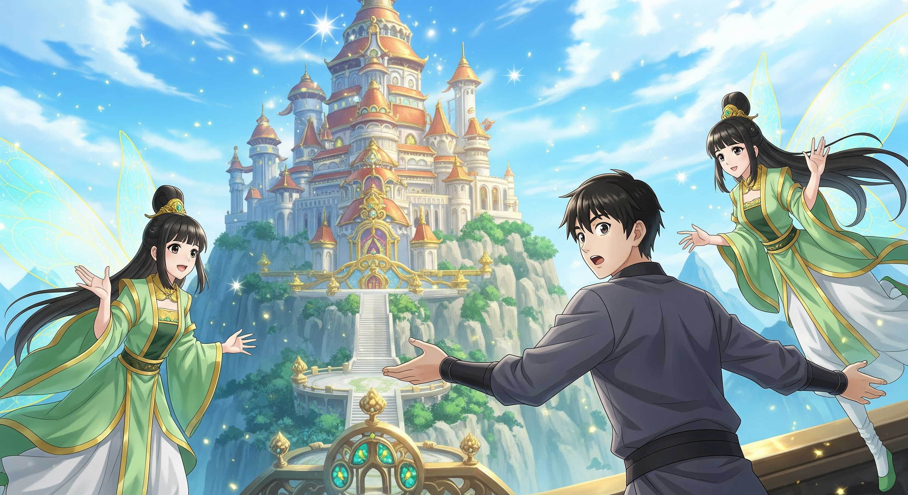
"Chú rể mới nhà ta đã đến kia kìa!"
👸 Panel 13: Bà chúa động tiếp đón
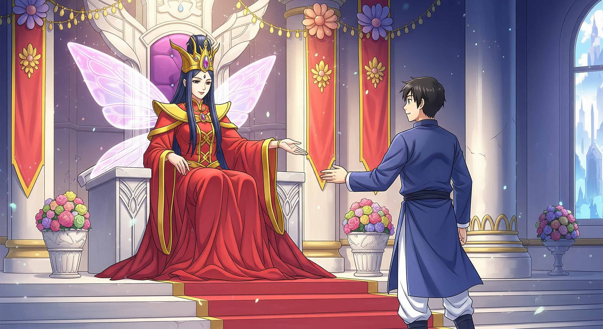
"Đây là hang thứ sáu trong ba mười sáu hang động ở cõi tiên!"
😍 Panel 14: Gặp lại người yêu
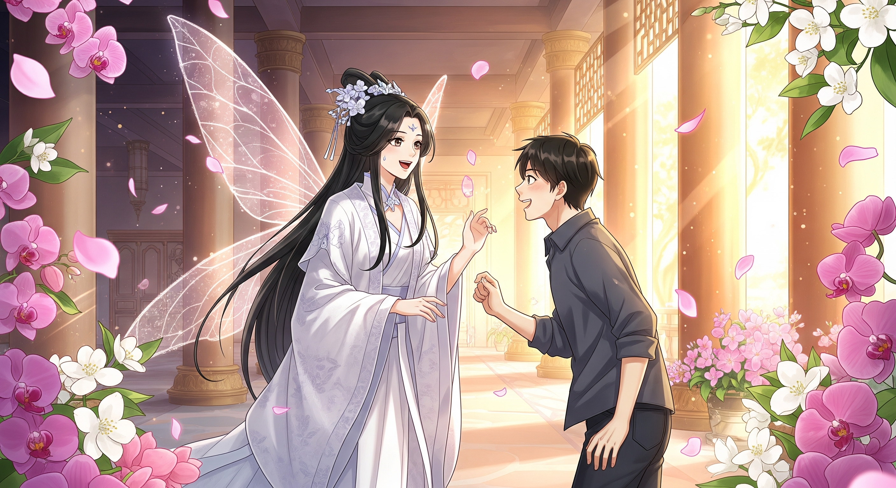
"Ô hay! Tôi tìm nàng khắp nơi mà không thấy!"
💒 Panel 15: Lễ cưới trong cõi tiên
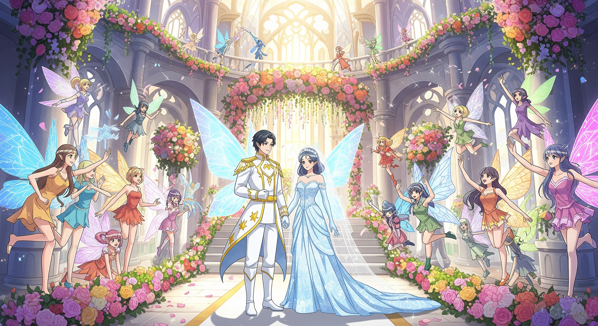
Lễ Cưới Cõi Tiên!
🌸 Panel 16: Cuộc sống hạnh phúc
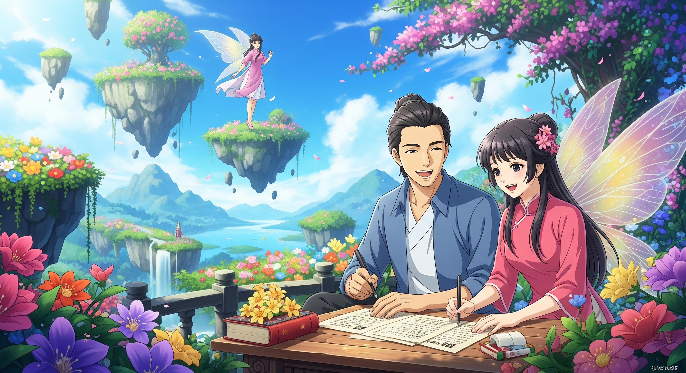
Ba năm trôi qua, Từ Thức sống hạnh phúc bên Giáng Hương trong cõi
tiên.
😔 Panel 17: Nhớ nhà
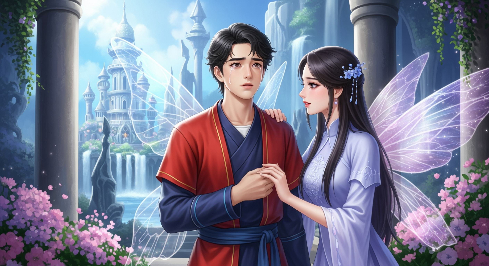
"Xa cha ngái mẹ đã lâu, muốn về thăm một chuyến có được chăng?"
☁️ Panel 18: Xe mây đưa về
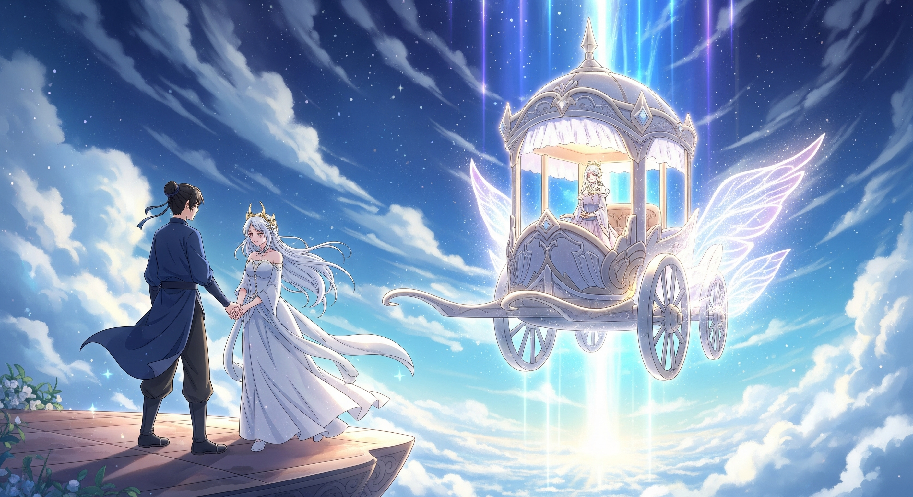
Giáng Hương đành phải cho chồng xe mây để trở về thăm quê hương.
😱 Panel 19: Quê hương đã đổi thay
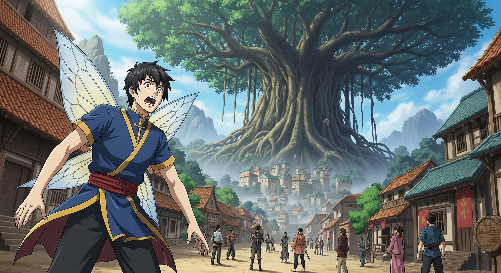
Mới ba năm mà sao nhà cửa đã khác hẳn?
⏰ Panel 20: Sự thật về thời gian
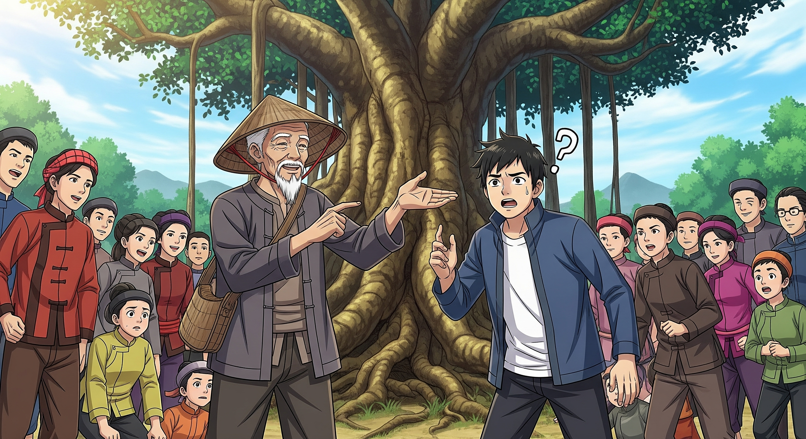
"Từ bấy đến nay dễ đã gần ba trăm năm rồi!"
💔 Panel 21: Xe mây biến mất
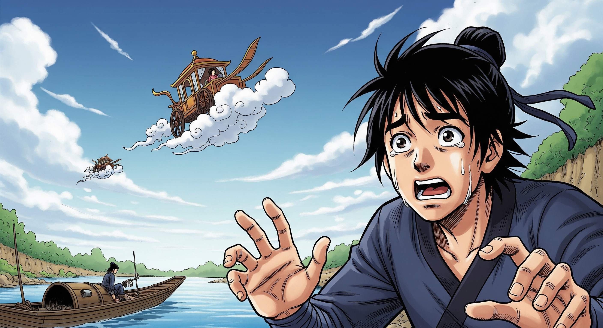
Từ Thức trở lại chỗ xe mây thì không ngờ xe đã biến mất từ lúc nào.
🏔️ Panel 22: Tìm lại hang cũ
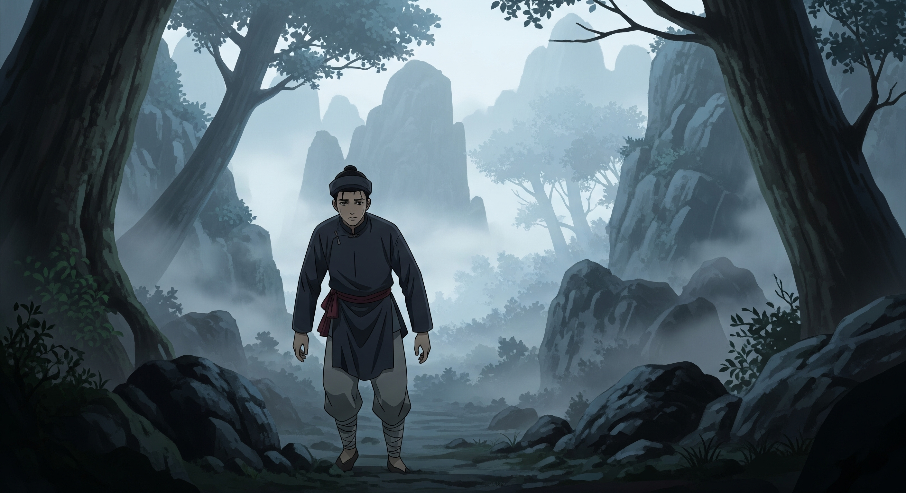
Hang động dẫn đến cõi tiên đâu rồi?
🌫️ Panel 23: Từ Thức mất tích
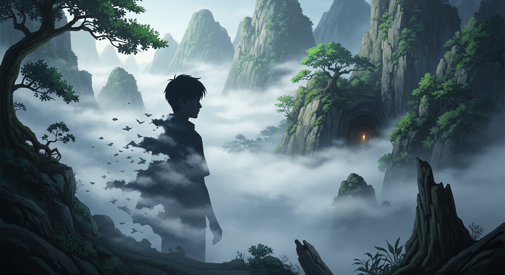
Từ Thức đi mãi không biết đến đâu, không ai thấy nữa. Từ đấy người
ta gọi hang núi này là động Từ Thức.
🎭 --- HẾT --- 🎭
✨ Bài học: Một khi đã chọn con đường, hãy biết trân trọng và không
tiếc nuối! ✨